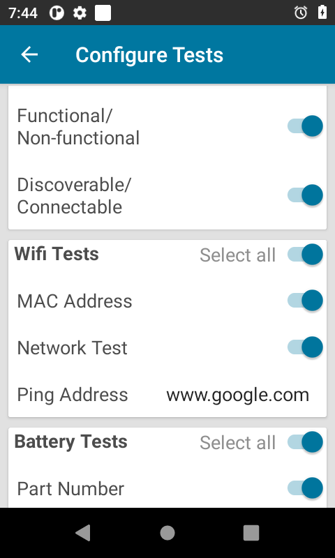

Présentation
Cette section est consacrée aux paramètres de configuration et aux options de génération de rapports de Device Diagnostic Tool.
Paramètres
L'écran Paramètres permet d'indiquer le chemin utilisé pour importer/exporter le fichier de configuration et de configurer les fichiers journaux d'état et d'historique. Pour accéder aux paramètres, touchez le menu Options en haut à droite de l'écran principal, puis sélectionnez Paramètres :
Paramètres de l'application
- Chemin du fichier :
- Chemin d'importation de configuration : indique le chemin du fichier de configuration :
/enterprise/usr/deviceselftest/configuration.xml - Sortie des fichiers journaux et chemin d'exportation de configuration : indique le chemin des fichiers journaux et du fichier de configuration exporté :
/storage/emulated/0/Android/data/com.symbol.selfdiagnostics/files
- Chemin d'importation de configuration : indique le chemin du fichier de configuration :
- Détails du serveur :
- Protocole : indique le protocole du serveur
- Adresse IP : indique l'adresse IP du serveur
- NomUtilisateur : indique le nom utilisateur de connexion au serveur
- Fichier journal d'état : champ de texte modifiable contenant le nom du fichier journal d'état. Ce fichier contient des informations relatives aux tests effectués, ainsi que les paramètres associés et les modifications de configuration éventuelles sur l'écran Configurer les tests. Il réside dans
/storage/emulated/0/Android/data/com.symbol.selfdiagnostics/files. - Fichier journal d'historique : champ de texte modifiable indiquant le nom du fichier journal d'historique, qui contient des informations relatives aux résultats des tests. Ce fichier est généré lorsque l'utilisateur exécute un test complet depuis l'écran principal. Il réside dans
/storage/emulated/0/Android/data/com.symbol.selfdiagnostics/files. - Taille max. des fichiers journaux en Mo : champ de texte modifiable indiquant la taille maximale des fichiers journaux.
- Importer : importe un fichier de configuration situé dans le dossier d'importation du fichier de configuration
/enterprise/usr/deviceselftest/configuration.xml. - Exporter : exporte le fichier
configuration.xmlissu des configurations définies sur l'écran Configurer les tests (/storage/emulated/0/Android/data/com.symbol.selfdiagnostics/files). Une fois le fichier de configuration exporté, déployez la configuration sur d'autres équipements. Pour ce faire, copiez le fichier .xml dans le dossier d'importation/enterprise/usr/deviceselftest, puis touchez le bouton Importer dans l'écran Paramètres. Copiez le fichier à l'aide d'Android Debug Bridge (adb) ou de StageNow avec File Manager.
Fichier de configuration
Configuration.xml peut être modifié manuellement dans n'importe quel éditeur de texte. Le format des balises existant doit être conservé. Vous configurez les options à l'aide de Paramètres ou de Configurer les tests dans l'interface utilisateur, à l'exception des options spécifiées ci-dessous :
admin_mode (mode_admin) : si cette option est réglée sur true, l'application s'exécute en mode admin, ce qui permet d'accéder aux paramètres et aux configurations de tests. Valeur par défaut = true.
allow_individual_test_for_user (autoriser_test_individuel_pour_utilisateur) : si cette option est réglée sur true, l'utilisateur qui ne dispose pas de droits administratifs peut exécuter les tests individuellement au lieu de les exécuter tous à la fois.
allow_individual_log_for_user (autoriser_fichier_journal_individuel_pour_utilisateur) : si cette option est réglée sur true, l'utilisateur qui ne dispose pas de droits administratifs peut générer un fichier journal de résultats pour chaque test au lieu d'un fichier journal unique contenant les résultats de tous les tests.
continue_testing_on_failure (poursuite_du_test_en_cas_échec) : si cette option est réglée sur true, la section suivante est automatiquement activée jusqu'à ce que tous les tests soient terminés, même si le test de la section précédente a échoué. Valeur par défaut = false.
show_extra_data (afficher_données_complémentaires) : si cette option est réglée sur true, des informations sont affichées sur la page de résultats des tests. Reportez-vous à la section Critères des tests pour consulter les informations concernées. Valeur par défaut = true.
debug (débogage) : si cette option est réglée sur true, les données de journalisation de l'application sont affichées dans logcat à des fins de débogage. Valeur par défaut = true.
close_on_result_acknowledge (fermeture_après_confirmation_des_résultats) : si cette option est réglée sur true, l'application se ferme une fois tous les tests réussis. Si un test échoue, l'application reste ouverte. Valeur par défaut = false.
Exemple de contenu dans configuration.xml :true true true true false status.log history.log 25
Configurer les tests
Cet écran permet de sélectionner les tests à exécuter et de configurer les paramètres de tests. Pour accéder à l'écran Configurer les tests, touchez le menu Options en haut à droite de l'écran principal, puis sélectionnez Configurer les tests :
|  |  |
 |
Configurer les tests
Vous pouvez définir des délais pour les tests qui nécessitent l'intervention de l'utilisateur. Une fois le délai (exprimé en secondes) écoulé, le test sélectionné suivant est exécuté s'il est configuré dans le fichier configuration.xml.
Paramètres de configuration :
- Test du scanner : vérifie si le scanner fonctionne
- Délai du test : indique le délai d'attente (exprimé en secondes) de l'entrée utilisateur
- Test des boutons : vérifie le fonctionnement du bouton talkie-walkie, du déclencheur de lecture (gauche ou droite) et des boutons physiques de contrôle du volume (+/-) de l'équipement
- Délai du test : indique le délai d'attente (exprimé en secondes) de l'entrée utilisateur
- Test d'écran tactile : vérifie le fonctionnement de l'écran de l'équipement
- Délai du test : indique le délai d'attente (exprimé en secondes) de l'entrée utilisateur
- Tests Bluetooth : vérifient si la radio Bluetooth fonctionne correctement et renvoient des informations associées
- Nom : renvoie le nom Bluetooth
- Mise sous/hors tension de radio : vérifie que la mise sous/hors tension de la radio Bluetooth fonctionne correctement
- Opérationnelle/Non opérationnelle : détermine si la radio Bluetooth peut être activée/désactivée sur une période de temps spécifiée. La valeur « Opérationnelle » est renvoyée si la radio Bluetooth est opérationnelle.
- Identifiable/Connexion possible : vérifie si la radio peut se connecter ou être identifiée
- Test WiFi : vérifie le fonctionnement de la radio WiFi et renvoie des informations associées
- Adresse MAC : vérifie si l'adresse MAC est valide sur la base de son format
- Adresse Ping : indique le nom du domaine utilisé pour exécuter le test ping
- Test du réseau : effectue un sondage ping de l'adresse Web indiquée dans le champ Adresse Ping via WiFi et renvoie le délai de temps requis pour recevoir une réponse
- Test de la batterie : vérifie l'état de la batterie et renvoie des informations associées
- Numéro de référence : renvoie le numéro de référence de la batterie
- Numéro de série : renvoie le numéro de série de la batterie
- Date de fabrication : renvoie la date de fabrication de la batterie
- Decommission Status (État de mise hors service) : renvoie l'état de santé de la batterie et indique si elle doit être mise hors service
- Valeur seuil de batterie : définit le nombre maximal de cycles de charge de la batterie pour modifier l'option Decommission Status (État de mise hors service). Si cette valeur est inférieure au nombre de cycles de charge actuel de la batterie, Decommission Status (État de mise hors service) est remplacé par « Remplacement de batterie requis ». Cette option s'applique aux batteries PowerPrecision uniquement. La valeur par défaut correspond à 400.
- Test du réseau étendu sans fil : vérifie le fonctionnement de la radio WWAN et renvoie des informations associées
- État de carte SIM : vérifie si la carte SIM est insérée
- État de voix : vérifie l'état de la voix de la carte SIM
- État des données : vérifie l'état des données de la carte SIM
- Test audio : vérifie le fonctionnement du microphone et du haut-parleur de l'équipement
- Délai du test : indique le délai d'attente (exprimé en secondes) de l'entrée utilisateur
- Tests de carte SD : vérifient la présence/l'absence de carte SD et qu'il est possible de lire et d'écrire sur la carte. La carte SD doit être installée pour pouvoir être détectée.
- Carte SD : vérifie si la carte SD est présente ou non
- Lecture : vérifie qu'il est possible de lire la carte SD
- Écriture : vérifie qu'il est possible d'écrire sur la carte SD
Lorsque des valeurs texte sont modifiées (Délai du test ou Adresse Ping, par exemple), elles sont activées tant que l'application est en cours d'exécution. Si vous fermez l'application et que vous la relancez, les valeurs extraites du fichier de configuration sont activées.
Pour plus d'informations, reportez-vous à Critères des tests.